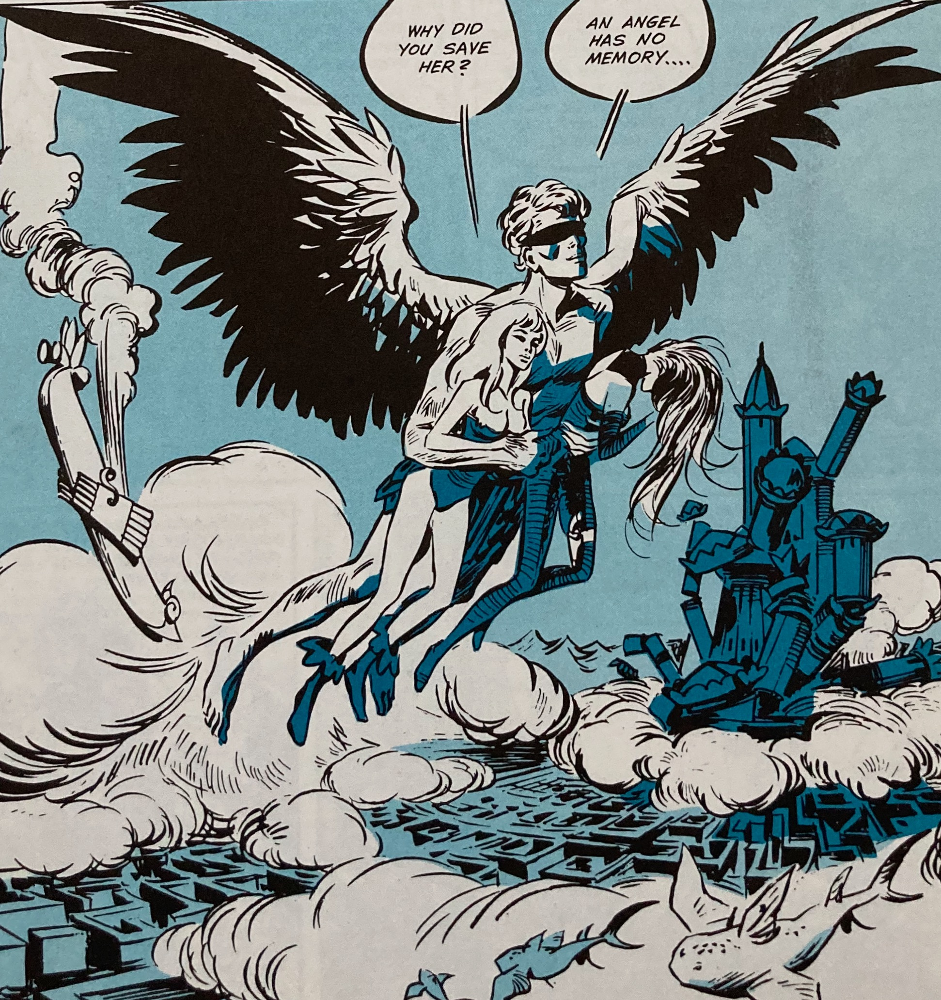

The open source software project OpenBEDM derives from an ealer project known as "Pygar" that was open from 2009 to 2015. It took the name Pygar from a 1964 graphic novel: "Barbarella" by Jean-Claude Forest.
So who or what is Pygar? In the graphic novel, Pygar is the Last of the Ornithothropes, the Blind Angel who appears later in the cult movie Barbarella featuring Jane Fonda. If you need more detail than that; here goes.
The Pygar Project takes its name from a modern mythological figure - a blind angel who, being blind, helps the good and bad alike. This seems an apt metaphor for the Pygar computer software. The Pygar software fosters cooperation for many purposes and is totally blind to the text and meaning of the cooperative dialog.
Pygar software will allow new, effective patterns of cooperation to evolve by protecting privacy and proprietary interests and allowing natural social normative processes to temper Internet behavior. That has to benefit society in the long run. Because Pygar is blind, however, the software core might as easily assist a cartel with price fixing or terrorists with planning an atrocity.
I chose the Pygar metaphor based on unpolished and non fact-checked memories of Pygar's story unearthed from the fog of 40 years of other memories. Here is my version of the story.
Pygar makes his appearance in the Barbarella saga as a dispirited angel so greatly oppressed by the decimation of the forces of Good in the distant future - where the story is set - that Pygar can no longer spread his wings and fly. A single innocent being blunders onto the dark evil planet where Pygar is trapped. This arrival sets off a confrontation in which irresistible evil rebounds from incorruptible innocence with such force that the planet is blown to smithereens. In the moment before doom, Pygar wraps one arm around the Heroine of Innocence and the other around the Queen of Evil, spreads his wings, and ascends safely to the stars.
Jean-Claude Forest created the characters of Pygar and Barbarella for V-Magazine in 1962 with an English version published in 1964.
Memory makes the past work better. When I fact checked the story, I saw I had remembered one part wrong. Pygar's explanation for his even handed treatment of mortal beings is that "An Angel has No Memory". This should be contrasted to the successful strategies for cooperative behavior that depend on having a short memory. So Pygar is not the banner child for cooperation that I would like him to be. Perhaps that is why he lives in such an evil universe.
